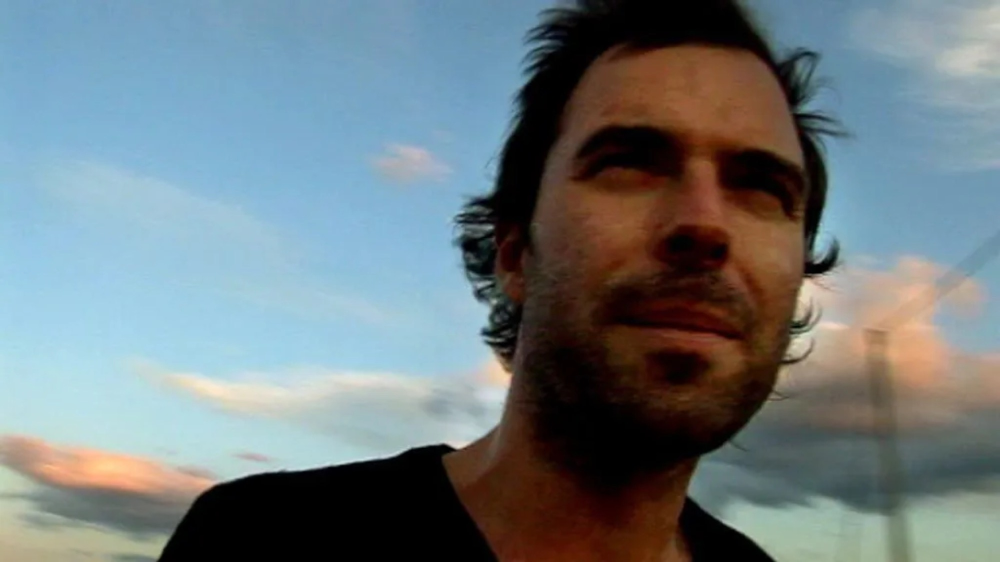
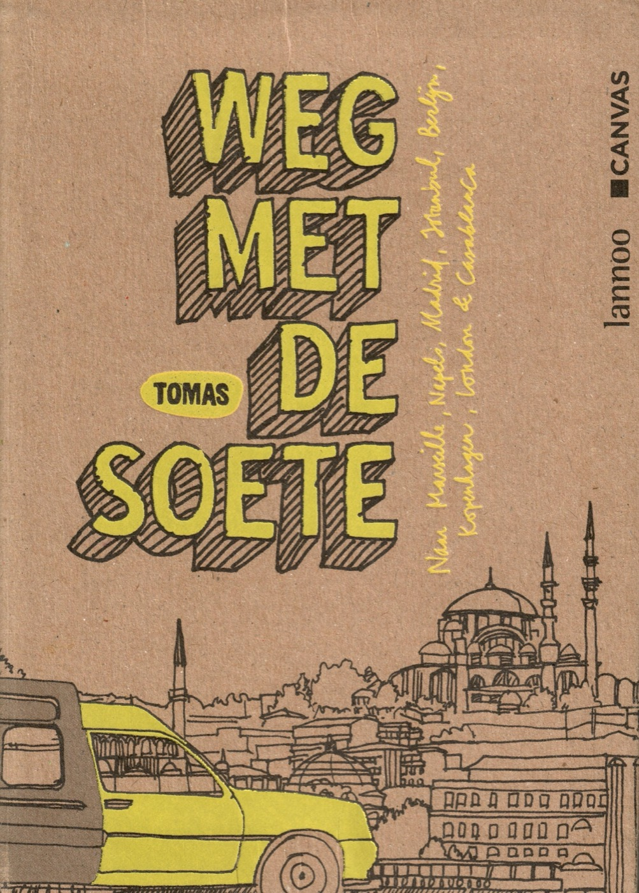

Weg met De Soete!
In 2008 trok Tomas De Soete voor het Canvas-programma Weg met De Soete! naar acht steden: Marseille, Napels, Madrid, Istanbul, Berlijn, Kopenhagen, Londen en Casablanca. In elke stad liet hij zich enkele dagen en nachten op sleeptouw nemen door een bijzondere inwoner, van een techno-dj en een rockzanger tot een chef-kok en een filmmaakster. Geen klassieke citytrips langs bekende bezienswaardigheden, maar een kennismaking met de plekken, mensen en verhalen die je als toerist doorgaans niet ontdekt.
Als researcher en redacteur van de televisiereeks was ik nauw betrokken bij de voorbereiding en de inhoud van het programma. Daarnaast kreeg ik de opdracht om het bijbehorende boek te schrijven: een persoonlijk reisdagboek vol indrukken, anekdotes, favoriete adressen en eigenzinnige observaties. Het resultaat was een alternatieve reisgids die niet alleen de steden, maar ook de leefwereld van Tomas en zijn lokale gidsen tot leven bracht.
Dat ik het boek als ghostwriter mocht schrijven, was geen toeval. Tomas was en is een van mijn beste vrienden en ik kende zijn manier van denken, spreken en vertellen door en door. Ik kon haast schrijven in dezelfde woorden als waarin hij dacht. Met de vormgeving van graficus Stijn Anseel was ons triumviraat compleet. Met ons drieën vormden we destijds de band Autopilot en ook vandaag maken we nog samen muziek, intussen onder de naam Best Parts.
